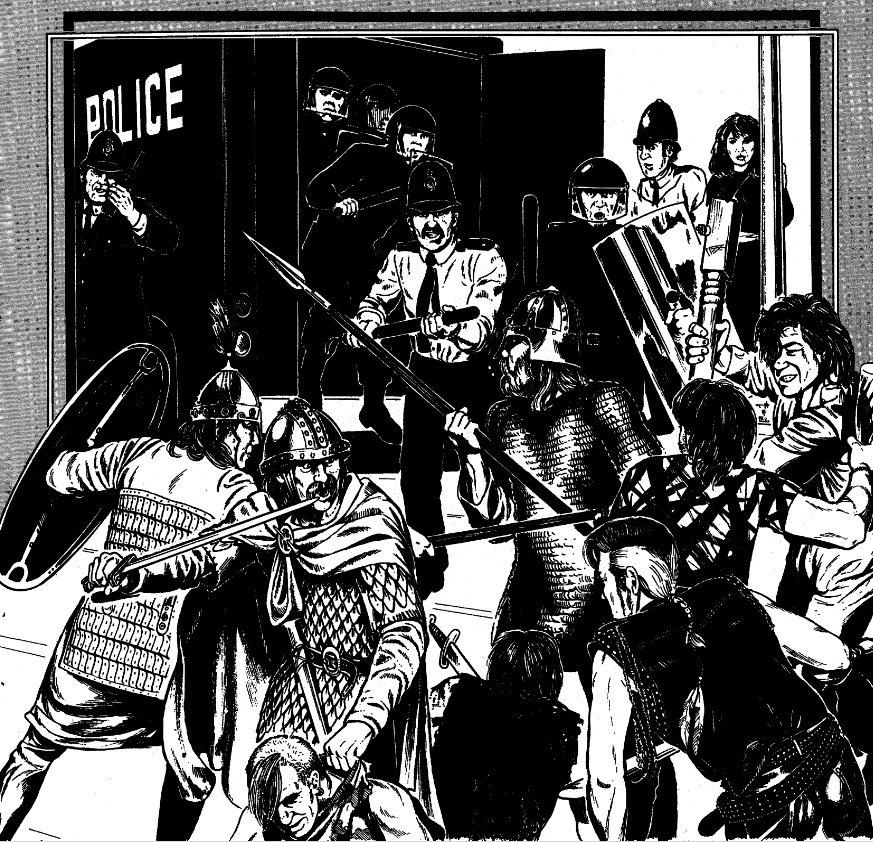

DAYTIME STREETS
1-8
9-11
12-18
19-27
28-32
33-39
40-46
47-57
58-65
66-74
75-77
78-79
80-87
88-91
92-100
DAYTIME PARK
NIGHTTIME STREETS
1-10
11-25
26-31
32-35
NIGHTTIME PARK
SPECIAL EVENTS
1-7
8-10
11-18
19-23
24-27
28-31
32-34
35-40
41-44
These are events which are somewhat unusual, even on the streets of London. Characters who have traveled from other times and places may find them more alarming or disorienting than anything else they are likely to ever see during their sojourn in this city.